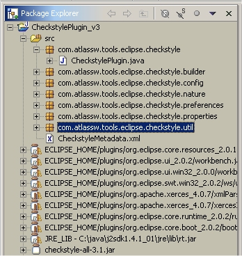

Eclipse Checkstyle Plug-in
Configuring File Sets
By default, Checkstyle is not configured to check the source code in any of your projects. To get Checkstyle to check the Java source files in a project it must first be configured for that project. To configure Checkstyle to check the files in a project select the project in either the Navigator or Package Explorer views, right-click on the project and select Properties. In the properties windows select Checkstyle along the left side. You should now see something like the window below.
From the Properties window you can create and edit File Sets. A File Set is the Checkstyle plug-in's way of allowing different Check Configurations to be used to check different collections of source files within the same project. A File Set defines a collection of source files and the Check Configuration used to audit them.
To create a new File Set click the New button. To edit an existing File Set select the File Set and then click the Edit button, or just double-click on the File Set. This should bring up the File Set Editor shown below.

Each File Set is given a unique name and a Check Configuration. Select from the drop down list the Check Configuration you want used when this File Set is audited. If no Check Configurations appear in the drop down list then you will need to first create one. See Configuring Check Configurations for information on how to create a Check Configuration.
Next, enter a series of regular expressions to select which files you want to include in the File Set. Each regular expression can be used to include or exclude files (the default regular expressions matches all files ending with ".java"). The regular expression is matched against the fully qualified file name within the project. That is, the entire path to the file starting with the name of the top level folder within the project and progressing through each folder down to the file, with '/' being used as the path separator. For example, consider the project in the figure below. The CheckstylePlugin.java file has a complete path of src/com/atlassw/tools/eclipse/checkstyle/CheckstylePlugin.java

The include/exclude setting of the last regular expression a file matches will determine if the file is included in or excluded from the File Set. This lets you create a regular expression that matches a number of files and then refine the selection with a series of exclusion expressions. To adjust the order of the regular expressions use the Up and Down buttons to move the selected expression up or down in the list. To see which files are included in the File Set click on the Test button.
Each project in your Eclipse workspace can have any number of File Sets defined, each with a different set of files and each with a different Check Configuration. You can also turn off the checking of a File Set using the Enabled check box in the properties window.
Once a File Set has been defined Checkstyle will run and audit the files included in the File Set. Any violations found by Checkstyle will be reported in the Eclipse Task view as shown below. Checkstyle will check source files each time the file is compiled or the Checkstyle configuration changes.

If you don't see any Checkstyle messages make sure that display of the Checkstyle Marker is enabled. To do this select the Filter icon on the right hand side of the Task View's title bar (the icon with three right pointing arrows). In the "Show items of type:" scrolling list make sure "Checkstyle Marker" is selected.
Copyright © 2002-2004 David Schneider. All Rights Reserved.